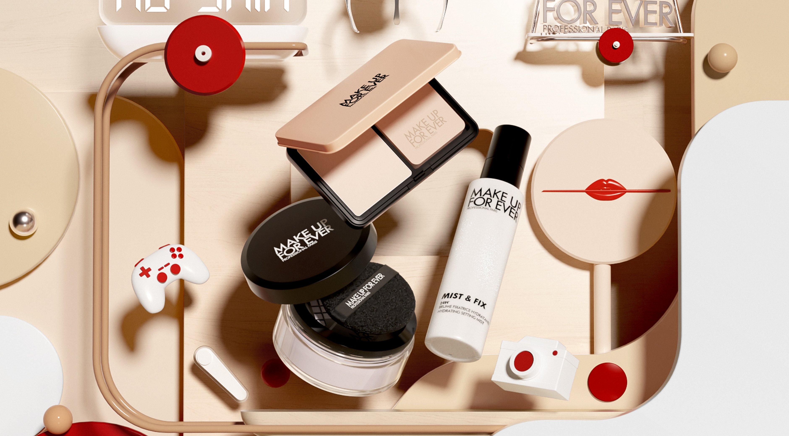
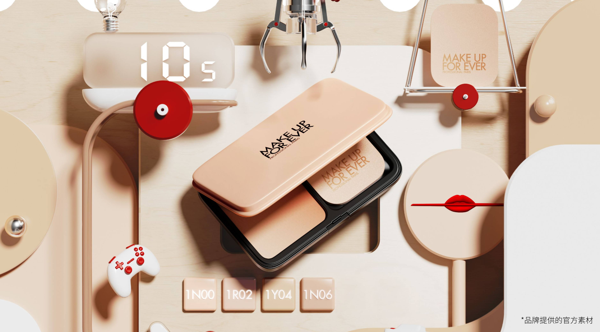
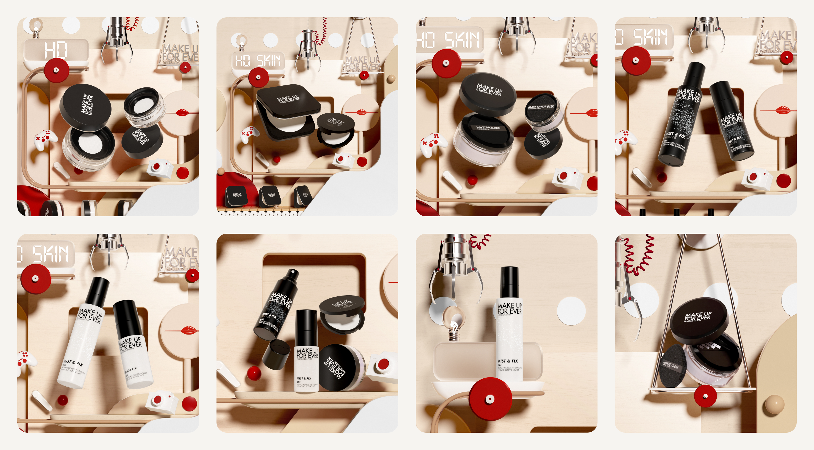
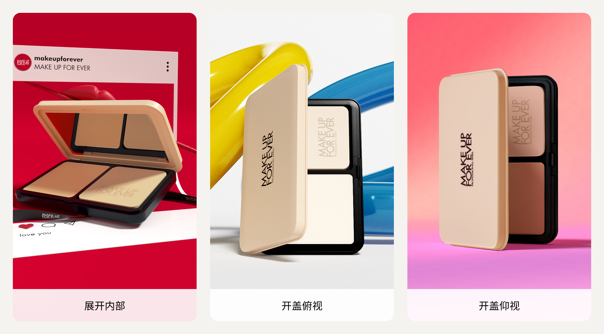
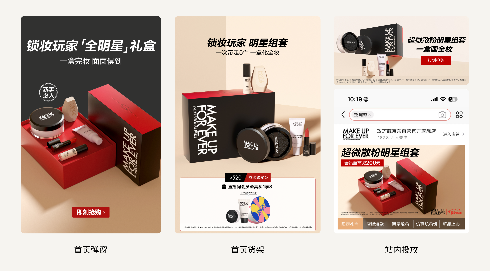
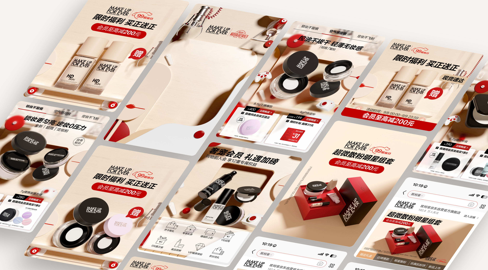
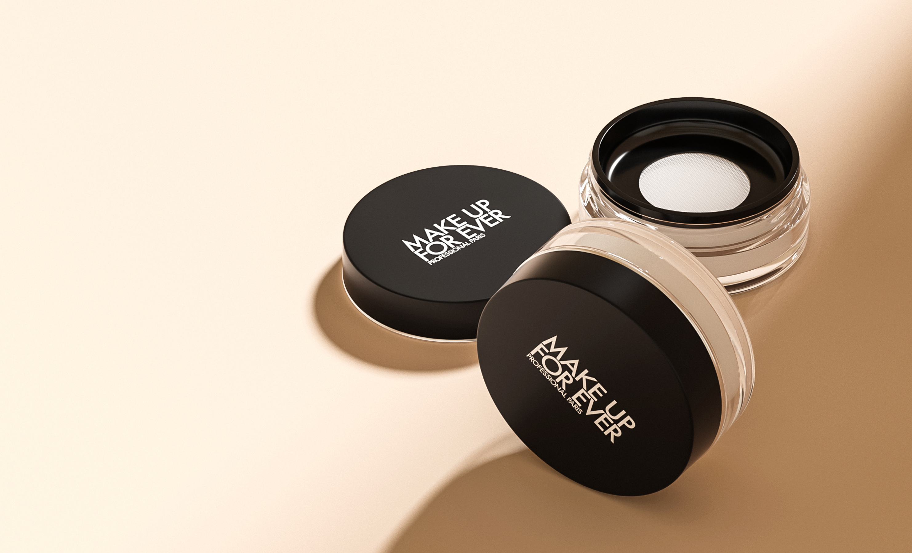

- 角色
- 核心视觉主导 · 产品视觉资产构建
- 负责
- 场景搭建、产品建模、渲染与后期合成，均独立完成
- 基础
- 品牌提供的 HD Skin 官方图片与日常积累的产品模型

一张官方图片，无法覆盖全店的视觉需求。
品牌仅提供一张 HD Skin 官方图片，没有可拆分的 PSD，也没有其他可用场景素材。活动需要延展至更多核心产品，既要延续品牌的趣味表达，也要适应不同页面与版位，仅靠现有图片无法完成。

把趣味从一张画面，延续到整个场景。
为了让品牌希望表达的趣味性贯穿全部视觉，我自行搭建场景，重新组织产品与道具的关系。延续官方画面的视觉语言，同时为不同产品与构图提供可调整的空间。

日常积累的产品模型，让构图不再受限。
日常工作中，我逐步完善产品资产库，品牌主要畅销单品已有模型可调用。本次活动因此不必局限于现有产品图片，可以根据场景需要调整视角、组合与光影，并独立完成渲染及后期合成。

以核心单品为例，让产品适应画面。
本次活动以 HD Skin 为主题，视觉延展同时覆盖品牌核心单品定妆蜜粉。我以蜜粉为例，根据不同构图调用合适的产品视角，再完成场景、光影与信息的整合，让产品主动适应画面，而不是被现有素材限制。

场景各有变化，趣味表达始终一致。
将产品资产与自建场景组合，延展至店铺首页、会员页、推广投放与直播间。针对不同触点调整产品组合、构图与信息布局，让各处画面有所变化，同时保持统一的活动氛围。

从素材受限，
到拥有可调用的视觉资产。
这次项目将日常积累的产品模型与新建场景结合，支撑了从单张官方图片到多触点视觉的延展。产品资产不仅服务于一次活动，也为后续构图与制作保留了更多选择。